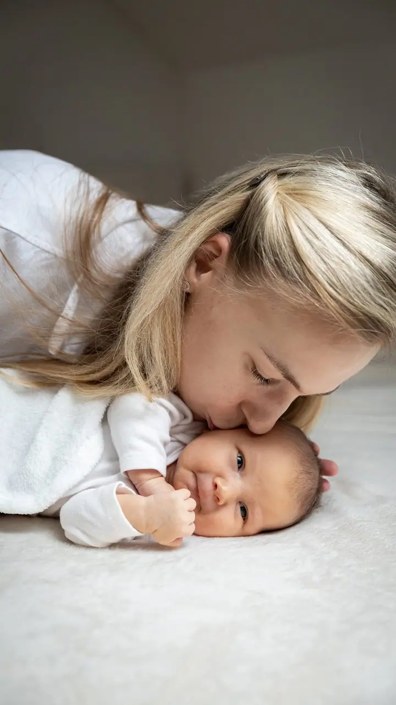
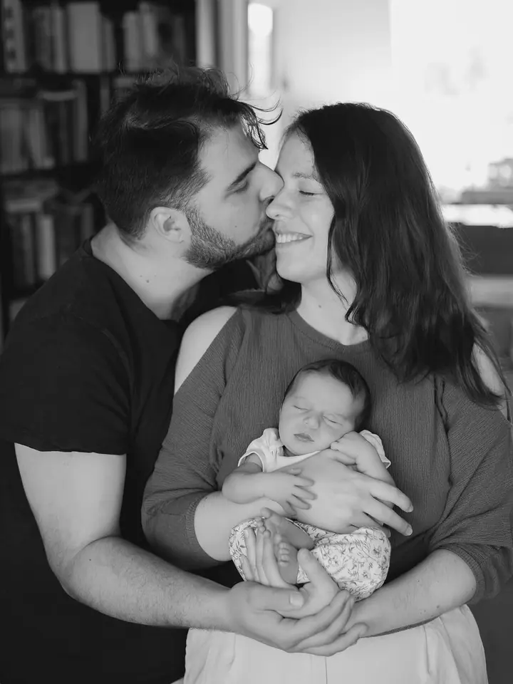
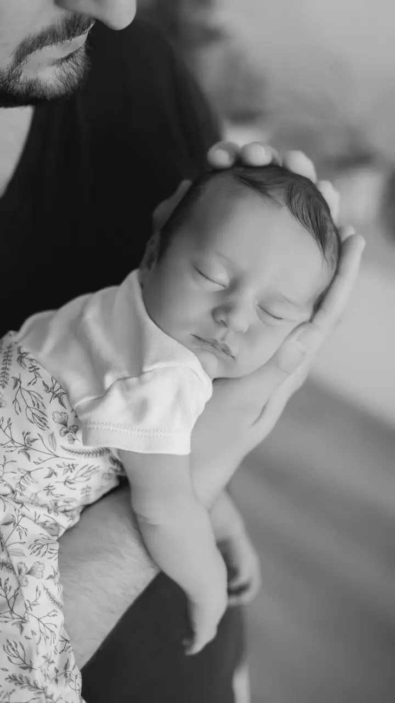

Newborn focení u vás doma
Miminko fotím v jeho přirozeném domácím prostředí, takže nikam nemusíte cestovat. Stačí mi napsat termín porodu.

Jmenuji se Lucie Nýdrlová a fotím těhotenství, miminka v prvních dnech a rodiny v Pardubicích, Hradci Králové a Náchodě. Na newborn focení přijedu za vámi domů, takže ni…
Rezervovat termínFotím 8 let a zázemí mám v Pardubicích a v Náchodě. Nejčastěji se věnuji těhotenskému, newborn a rodinnému focení, fotím svatby a pro podnikatele také brandové portréty. Miminka nejraději fotím u nich doma, v prostředí, které znají.


Focení se mnou je hlavně zážitek. Nejde mi o dokonalé pózy, ale o opravdové chvíle. Nehoním minuty a dávám prostor pro pauzu. Klienti mi často říkají, že to bylo překvapivě příjemné a že se hodně nasmáli, a spousta z nich se ke mně vrací.
Když nefotím, jsem máma malé holčičky a kočičí máma. Nabíjí mě výlety po koutech Česka, projížďky na kole, čtení a malování. Snažím se vnímat, naslouchat a zpomalit, a to si nesu i do focení.
Co fotím
Miminko fotím v jeho přirozeném domácím prostředí, takže nikam nemusíte cestovat. Stačí mi napsat termín porodu.
Těhotenství je období plné očekávání, něhy a proměn. Fotím ho jemně, přirozeně a bez naučených póz.
Rodinné focení venku i ve studiu. Na Vánoce připravuji jemnou scénu ve svatebním studiu DannyMa v Pardubicích, focení trvá zhruba 25 minut.
Velkou svatbu i intimní obřad v pár lidech fotím převážně reportážním stylem, abyste mohli být sami sebou. Dojedu za vámi po celé ČR.
Postup
Ozvěte se e-mailem nebo telefonem. U newborn focení mi stačí termín porodu, termín pak doladíme podle toho, kdy se miminko narodí.
Domluvíme se, co od focení čekáte. Ráda vám poradím s oblečením a barvami, aby vám fotky seděly.
Přijedu za vámi domů nebo se potkáme ve studiu či venku. Povedu vás, ukážu pózy a když je potřeba pauza, počkáme.
Fotky pečlivě vyberu a upravím do jemné, přirozené podoby a pošlu vám je elektronicky.
Otázky
Nemusíte. Newborn focení dělám u vás doma, abyste po porodu nemuseli nikam cestovat. Fotím nejčastěji v Pardubicích, Hradci Králové, Náchodě a okolí.
Ideálně už v těhotenství. Stačí mi napsat termín porodu vašeho miminka a domluvíme se.
Vůbec ne. Nemusíte umět pózovat ani mít dokonale poslušné děti. Po celou dobu vás povedu, abyste se cítili jistě a vypadali přirozeně.
Focení trvá zhruba 25 minut ve studiu ve svatebním studiu DannyMa. Je vhodné pro rodiny s dětmi, páry i těhotné ženy. Po domluvě je možný i exkluzivní hodinový slot se zapůjčením slavnostních šatů.